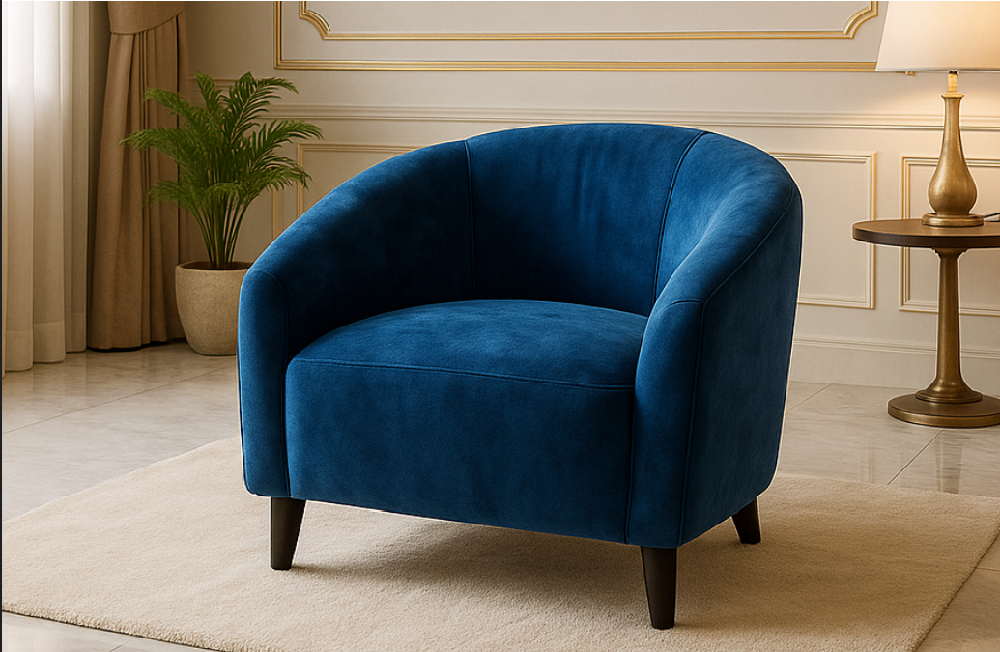

Découvrez l'histoire de FATIMA et le savoir-faire derrière la marque SOFAMOR.
L'entreprise FATIMA est née d'une ambition claire : offrir aux foyers et aux entreprises congolaises un mobilier alliant le prestige international et l'expertise locale.
À travers notre marque SOFAMOR, nous sélectionnons les meilleurs matériaux bruts et designs en provenance de Turquie et de Chine. Ces éléments premium sont ensuite rapatriés dans nos ateliers où la magie opère.

Un montage minutieux réalisé par nos artisans qualifiés en RDC.



Parce que le service premium ne s'arrête pas à la sortie de l'usine, FATIMA dispose de sa propre flotte de camions. Nous assurons un transport sécurisé et une livraison rapide de vos salons et portes, directement de nos ateliers jusqu'à votre salon ou votre bureau.
Planifier une livraison